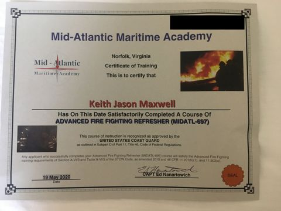
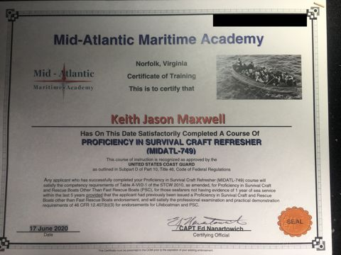

Maxwell Associates is a Florida fictitious business name registered to Keith J Maxwell.
Keith J Maxwell is a senior systems design and project engineer with more than 30 years of experience serving both BWR and PWR nuclear utilities. He is currently a senior systems engineering consultant to an NSSS supplier, coordinating design disciplines on power uprate task reports, calculations and drawings from initial draft through final issue.
His career includes senior project engineering for new builds and upgrades at U.S. Department of Energy facilities, owner oversight of OEM contracts, procurement and safety-related design change packages, and design and licensing basis recovery at stations including DC Cook, Millstone, Davis-Besse, Perry, Cooper, Vermont Yankee, Nine Mile Point and Pilgrim. He began his career at General Electric after graduating from Massachusetts Maritime Academy and served as a line officer in the U.S. Naval Reserve from 1981 to 1993.
Keith attended Massachusetts Maritime Academy from 1977 to 1981, earning a B.S. in Marine Engineering (Mechanical) and serving as Engineering Operations Officer, USTS Bay State. He is a licensed operating engineer for fossil and diesel plants and holds an active U.S. Coast Guard Third Assistant Engineer license (Unlimited Horsepower; Steam, Diesel and Gas Turbine), re-qualified in 2003. He maintains his STCW, TWIC and mariner medical credentials and has continued maritime education and training at the AMO facility in Florida.
After graduating he continued part-time merchant operating work through MEBA II, including contract work with Military Sealift Command on SL-7 ships. As a U.S. Naval Reserve Line Duty Officer (1981–1993), he performed operating engineer and bridge duties on steam and gas turbine destroyer platforms in Norfolk, Virginia. In 2016 he sailed as Assistant Engineer / Oiler on Massachusetts Steamship Authority vessels (Woods Hole and Hyannis). Through Maxwell Associates he offers project management and oversight services for nuclear and merchant marine engineering, operations and maintenance projects.
Project management and oversight services for nuclear and merchant marine engineering, operations and maintenance projects.
Senior Systems Engineering Consultant coordinating design disciplines for EPU/MUR/TPO power uprate task reports, calculations, licensing documents and drawings for multiple utility customers.
Assistant Engineer / Oiler on Steamship Authority vessels.
EPU Lead Project Engineer, BWR Chemical Decon PM, MUR Uprate PM, and FPL Principal Engineer for Containment Sump and Long-Term Spent Fuel projects; supervised EPU equipment specification development, including heat balance and component sizing for an 18% PWR power uprate.
Lead Engineer for the independent Residual Heat Removal System health review supporting an NRC inspection.
Principal Engineer for the Maintenance Department Strategic Improvement Plan; implemented and closed the NRC CAL-related improvement strategy, contributing to an improved INPO rating.
Restart activities including containment sump and ECCS nuclear safety analysis, root cause analysis, modification design, field installation, design basis verification and licensing support.
Senior Systems Manager/Engineer and Maintenance Planner for HPCI, RCIC, SLC, AE and AOG systems, including operability determinations and refueling floor technical direction.
Project Lead for design and licensing basis validation during recovery and restart; developed UFSAR procedures and prepared the 10 CFR 50.71(e) submittal.
Senior Systems Engineer for Emergency Diesel Generators and Isolation Condensers; managed the rebuild of the Isolation Condenser tube bundles.
Mechanical Lead and Licensing Configuration Management Supervisor for the 50.54(f) response; supervised thirty contract support personnel.
Qualified BWR 3 Senior Systems Engineer through an extended outage restart; led the operations Technical Specifications surveillance program.
Project Manager for program and modification implementations at Connecticut Yankee and Millstone.
Part-time merchant operating engineer, including contract work with Military Sealift Command SL-7 ships.
Project Manager and Field Engineer for Northeast BWR utility customers, including outage services, in-vessel work and specialized tooling.

